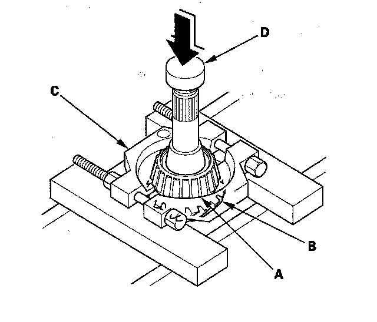
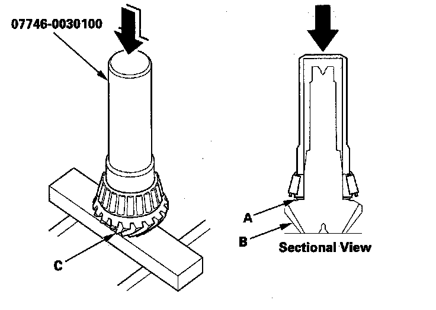

Transfer Output Shaft (Hypoid Gear) Bearing Removal/Installation
Transfer Output Shaft (Hypoid Gear) Bearing Removal/InstallationSpecial Tools Required
Driver, 40 mm I.D. 07746-0030100
1. Remove the tapered roller bearing (A) from the transfer output shaft (hypoid gear) (B) with a bearing separator (C) and the press. Place a shaft protector (D) between the transfer output shaft (hypoid gear) and the press to prevent damaging the transfer output shaft (hypoid gear).

2. Install the 40 mm thrust shim (A) over the transfer output shaft (hypoid gear) (B).

3. Install the tapered roller bearing (C) over the transfer output shaft (hypoid gear) using the driver (40 mm I. D.) and the press.